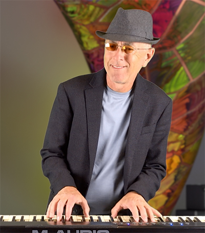

|
Ken Bauer
 Early Years:
A true son of SoCal, Ken was born in Long Beach CA and grew up in the City of Orange.
In Jr High School, Ken and a friend created an animated movie and, in high school, a
campus documentary movie. And at 18 Ken built a ‘kit car’.
Music Life:
Ken had a few years of traditional piano lessons he started at age 8. At 12 he was
playing organ with the local bands. When they started to gig, hauling the organ was out.
His solution was to buy a cheap guitar, taught himself to play and voila, he was portable!
In his 20's he studied jazz and improvisation with Paul Zhuel, which led to playing in
various SoCal band's in the 80's including 'Matrix'.
After moving to Silicon Valley in 2013 Ken started playing with local musicians, leading
to his meeting Steve. After trying out several keyboardists without success Ken was asked
to sit in on a rehearsal and it was magic. Ken was an instant hit. Not only a great
keyboardist with great chops, but a total team player who was essential to the formation of Gray.
Ken also composes all kinds of music from religious to rock settings and some of his work can be seen on YouTube.
https://youtu.be/C999mFsxftg
Professional Life:
Ken spent his career as an RF (Radio Frequency) Hardware engineer with Hughes Aircraft, Apple, Broadcom and others.
He also found time to design audio gear for Midiman/M-Audio as well as (his own?) synthesizers and guitars.
|